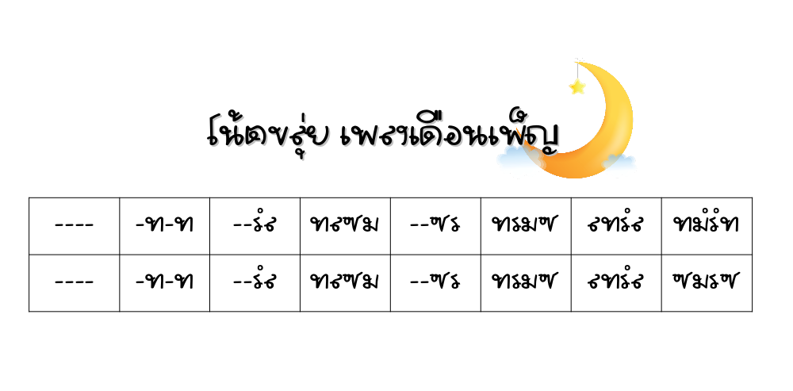

เอกสารการฝึกอ่านโน้ตไทย
โน้ตเพลง

%%player_top
%%tempo{*30,60,80}
M:2/4
L:1/8
K:C
%%MIDI program 73
C/D/E/G/|D3 E|D2 C/D/E/G/|D/E/D/C/ DE|
G2 E/G/A/c/|G2 E/D/C/D/|E>G Ac|d/e/d/c/ A/c/G/G/|
G2 GG/G/|GG A/c/d/e/|A3 G|AA/G/ A/c/G/G/|
G2 GG/G/|G/G/E/D/ CD|E3 c|d/e/d/c/ de|C3 :|

%%player_top
%%tempo{*30,60,80}
M:2/4
L:1/8
K:G
%%MIDI program 73
B|B>d A/B/A/G/|E>G D/B/D/E/|G/A/B/d/ A/B/e/d/|B3 ]
B|B>d A/B/A/G/|E>G D/B/D/E/|G/A/B/d/ A/G/E/D/|G3 :|